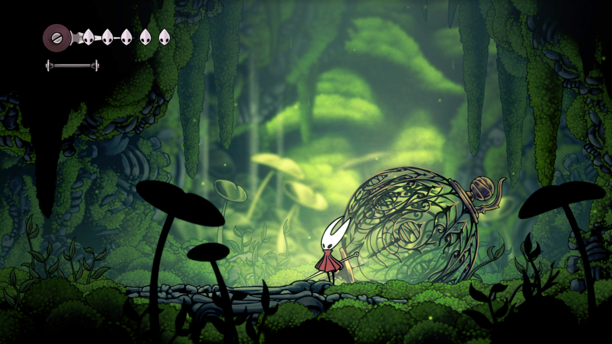
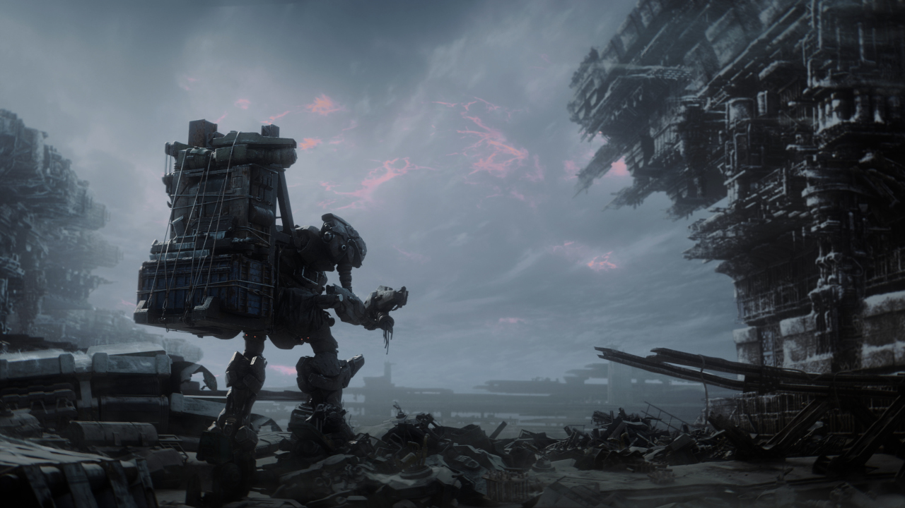

"Oh, random person on the internet, I just have too much money and don't know what to spend it on this year!" Well then look no further, these are some games to watch out for next year. Honorable Mention to Shadow Gambit, but stealth tactic games are unfortunately not usually my jam.
Hollow Knight: Silksong
STAY CALM ITS FINALLY HAPPENING

Hollow Knight was originally released in XXXX, and is one of my favorite games of all time. You play as a small creature exploring the vase world of Hallownest, a land suffocating under the weight of a mysterious disease.
As you explore deeper into Hallownest, you discover more and more about the world. If you've never played the original, I highly recommend it.
Silksong was originally teased in 2019, and finally has a confirmed release date in 2023. This game will follow one of the supporting characters from the original game, Hornet, as they travel through the verdant landscapes of a faraway land.
Armored Core VI: Fires of Rubicon
A long awaited continuation

FromSoftware have a history of making really good games, and while I never played any of the original Armored Core games I am very excited to try out the franchise with Armored Core VI: Fires of Rubicon.
In the game you take on the role of a pilot of a mech and take on a variety of different missions designed to test your skill as a pilot as you navigate the troubled waters between the various factions throughout the system.